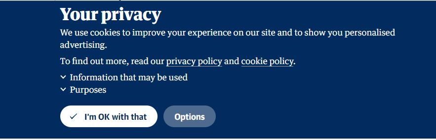

- Welcome to our Privacy and Terms and Conditions page. Here we'll try to give you more insight into your own privacy online, and the importance of the Terms and Conditions for the digital and online tools you use. In addition, we have also researched about Virtual Private Networks, information owning and GDPR, so scroll down and enjoy what you read.
Privacy
- Set up an online account
- Make a purchase in an online store.
- Register for a contest
- Take part in a survey
- Download free software
- Surf the web
- Use apps on your computer or your mobile device.
- Post photos or your status on social media.
Companies and recruiters may use this information, which constitutes your online reputation, to gauge your suitability for a job.
Criminals may use data about you online to target you for phishing scams, steal your identity, and to commit other crimes. You can reduce your risk by following the advice in this article to protect your privacy online.
Tips for sharing information online
Don’t share more than you need to
Don’t post anything online that you would not want made public.
Minimize details that identifies you or your whereabouts. Sharing details about an event you are attending might seem harmless, but you’re actually letting people know where you are and that you’re not at home.
Keep your account numbers, user names, and passwords secret.
Only share your primary email address or Instant Message (IM) name with people you know or with reputable organizations. Avoid listing your address or name on internet directories and jobposting sites.
Enter only required information—often marked with an asterisk (*)—on registration and other forms.
Check app settings, especially on your phone. Be careful about allowing apps to access your location information, your photos, the camera, or the microphone.
Search for your name on the internet using popular search engines. Search for text and images. If you find sensitive information about yourself on a website, look for contact information on the website and send a request to have your information removed.
Regularly review what others write about you on blogs and social networking websites. Ask friends not to post photos of you or your family without your permission. If you feel uncomfortable with material such as information or photos that are posted on others' websites, ask for it to be removed.
On Facebook and other social media, turn on the tag review option to prevent people from tagging photos that you appear in without your permission.
-
Terms & Conditions
- 1. Most often consumers have no option or control over the terms & conditions since most often, purchasing the good or services are mostly possible if the T&Cs are accepted.
- 2. Rationally from a cost-benefit perspective, the cost of reading maybe high since the T&Cs are often long and written in complex or technical language. It will be therefore unrealistic but arguably also unnecessary to expect all users to read and understand all T&Cs they came across. Despite the above, it should be noted that some users are motivated to be informed about certain specifics of the T&Cs e.g. reliability of the company or service, data safety, etc and hence tends to read these specific sections in the T&Cs but not the whole hence there is the need to shorten and simplify the T&Cs ( Article 5 of the unfair contract terms directive advocates for T&Cs to be drafted in plain and intelligible language). While some users employ other strategies to get informed about specific content of the T&Cs by checking the frequently asked questions (FAQ) section to look up the information they consider important (most often included in T&Cs as well).
- 3. Also readership of T&Cs is sometimes low because some consumers or users obtain or are fully aware of their basic (legally provided) knowledge about their rights and obligations and hence reduces the need to read especially information pertaining to such right in T&Cs.
- a) The need to explain to customers what they may expect of the good and services purchased.
- b) What to do and whoop to turn to in case of defects
- c) What rights remedies users have in case of defects or issues
- d) Companies or service providers belief that shorter and simpler.
T&Cs potentially could offer less information to users though shortened T&Cs might not necessary means relevant information is missing for long and complex T&Cs can as well not informed users.
- e) Also for example under EU-consumer law, the company or service provider is required to inform the user on a great number of issues before the conclusion of any contract with information like identity and contract details of the company or service provider, price, contract and termination duration, payment method, delivery, complaint policy, etc.
- 1) Directly provide T&Cs on the screen in a format that users can scroll through than directing them to a link to click on.
- 2) Standardised T&Cs and presenting it in a simple and short format, containing no more than the most relevant information will improve readership and understanding.
- 3) To improve T&Cs readership, an estimated time needed to read the T&Cs could be mentioned which could also serve as incentives for companies or service providers to reduce the length of T&Cs.
- 4) Adding quality cues like some kind of logos from national or international consumer organisation certifying for example that the T&Cs are fair. This creates some kind of effortless awareness on the part of the user. Others like customer feedback can improve readership.
- 5) Generally, policy that focuses on raising general and specific awareness will make users more aware of their basic rights.
VPN(Virtual Program Network)
Helps you maintain your right to Privacy
Bypasses a restrictive network
Better protection on public Wi-fi use
Protects you against Google digital moves
Lets you access other countries content (streaming services etc.)
For PC - Search for any VPN’s in any search database like Google, Bing, Yahoo, DuckDuckGo etc.
For Android/IOS - Search for VPN in Google Play Store or Apple Store.
Slower internet connection speed
Sometimes it doesn’t allow you access to content on streaming services
Connections tends to drop (depends on VPN provider)
Improved security
Improved privacy
Content Unlocking
-
1. NordVPN
2. SurfsharkVPN
3. ExpressVPN
4.CyberGhost
5. Astrill VPN
6. TorGuard
7. Ivacy VPN
8. Privacy VPN
9. Windscribe VPN
10. VyprVPN
Do you know who owns your Information?
Read every Terms & Conditions to ensure it has a clear distinction between the provider's right to store and process the data and the ownership that is retained by the customer.
If in business involving highly confidential data consult advice if in any doubts.
Always keep your own personal back up despite having it on the cloud for failures can occur.
Ensures your cloud provider fully encrypts your data and uses end-to-end encryption when transmitting it.
Check where (country) your data is to be stored and if the data regulations match up with yours.
Here is how the GDPR can help you day-to-life

Protect your privacy on the internet
Information is the gold of the internet. Your privacy on the internet depends on your ability to control both the amount of personal information that you provide and who has access to that information on the internet.
Is your information at risk on the internet?
When performing everyday online activities, you might reveal personal information that can be used by others to invade your privacy. This can include sensitive information such as your IP address, your email address, your current physical location, or your home or work address. For example, online shopping transactions often require credit card information and your home address.
How your information gets on the internet
Businesses, governments, and other organizations gather data when you:
What happens to your information
Most responsible businesses use your personal information to help improve your experience with their products and services e.g. like helping you complete a transaction, remembering your preferences, or delivering personalized content and special offers.
Online transactions—such as signing up for a service or buying something—are linked to you by information such as a shipping address or credit card number. But in most cases, businesses generally collect data that does not identify you by name. Websites track which webpages you visit and the clicks of your mouse, but not you personally.
Personal details about you could be also online because you may have added your own information in resumes, chats, pages on social networking sites like Facebook, or comments in discussion groups or on Twitter.
Others may have published information about you. Friends may write about you or post photos of you and your family. Records of government agencies are searchable—for example, photos of your house and its value, your birth certificate, and copies of your signature. Church groups, clubs, and professional associations may reveal your full name, workplace, and donation history.
Why it matters if your information is online
The information that is available about you online is important for two reasons:
Online information is searchable and often permanent. Unlike data stored on paper, however, powerful internet search engines and data aggregation tools can make it easy to pull data together to build a full profile of you
Once data is published online, it is effectively there forever and, depending on the privacy policy of the company holding the data, may ultimately be seen by anyone on the internet. Sites may archive anything you have posted in addition to data they have collected from your friends (or ex-friends) may give your information out, or hackers and security lapses may expose it
Read first the websites privacy policy
Privacy policies—which are commonly outlined in a website’s privacy statement—should clearly explain what data the website gathers about you, how it is used, shared, and secured, and how you can edit or delete it. The website’s privacy statement should be readily available for you to review. If there is no privacy statement, take your business elsewhere.
Choose your friends wisely
Be mindful when adding contacts or friends on social networks. If possible, verify with the person directly if the account is authentic. If you are unsure you are adding the right person, try to limit the information that person can view on your profile.
Choose how private you want your profile or blog to be.
Review your website settings and preferences to manage who can see your online profile or photos, how people can search for you, who can view your posts and make comments, and how to block unwanted access by others. Be sure to review the privacy settings for your favorite social networks to ensure you’re not sharing more than you intend to.
Monitor what others post
In recent years, the increase use of technology and its services has come with it cyber crimes. To best protect ourselves, family and our community, human beings considered as the weaker link in cyber security, we needs to be aware of information security issues and best practices to adopt since technology cannot alone always protect us. One area of human weakness that this article will be dealing with is the terms and conditions(T&C) also known as terms of use or terms of service. It's simply a legal agreement between a service provider and the consumer or user. It's common with software or services companies like web browsers, online shops, social media, etc. Studies or research on consumers attitudes towards terms and conditions has shown that a quasi totality of consumers accept terms and conditions(T&C) without even reading them (both online and non-online). There are different consequences of accepting T&Cs without reading like losing rights to your data and legal recourse but this article will focus mainly on the awareness of data or information we give out or permit to be used in terms of contracts agreement knowingly or not that can jeopardise our security if breached or falls on wrong hands.
So why do vast majority of consumers accept T&C blindly despite the risk of not reading?
Why are T&Cs so lengthy and complex?
Word count of some well known companies T&Cs researched, illustrate a staggering word counts. This is because they often put more information in the T&Cs, blurring the fine line between actual T&Cs. Some lack general incentives to draft short and easy to read T&Cs as they want to reduce any liability risks. So why are T&Cs lengthy and complex despite Article 5 of the EU unfair contract terms directive advocating for T&Cs to be drafted in plain and intelligible language? Most of these reasons are, in themselves, respectable.
What means needs to be done to reverse this trend?
Some policy recommendations to increase the shares of users to read the T&Cs.
Short Video Clips
Summary
VPN stands for Virtual Program Network and is a program for your computer to connect to other countries in the world where it essentially replaces your IP address and gives you an address of that specific country. This type of programs, is mostly used as a tool to secure your computer against any type of Cyber Threat that could come and essentially what it does, is that it hides your original location and connects you to a Virtual network. Though, most of the VPN services providers asks for a small amount of fee in return. Ask yourself if you would like your privacy to remain yours, or others?
Why?
How?
Advantages and disadvantages of Virtual Private Networks
Disadvantages:
Advantages:
If you were wondering what VPN to buy, here's a list that sums up some of the best alternatives you have (according to vpnpro.com)
Here's a video we've found to be pretty informative when it comes to the good and the bad of VPN's.
This will depend on where you live. And if you own it, then you should have control over it and if not then how secure is it whether you own it or not? Unlike in the US, EU citizens owns their data. The European Union's General Data Protection Regulation (GDPR) that took effect since May 25, 2018, clearly states that it is the citizens/residents who owns their personal data (right to deletion or changes in their data, sharing with third parties, right to know what data has been collected, etc)
Although EU citizens/residents owns their personal data, and with the multinational nature of businesses, there is a risk that the country your data goes to may not have the same level of protection as yours. According to the GDPR, any multinational companies around the world who collect EU citizens/residents data for use in any means must comply to this regulation by taking “appropriate measures” to protect the data
So where is all this data exactly, how is it being used, and how secure is it?
Nowadays, our data is increasing stored on the cloud and anyone who uses a smart phone, there are chances that that persons personal information (photos, music library, emails, search engine activity, etc) is stored on the cloud. Most of this data is stored in cloud by these major 4 corporations(Amazon, Microsoft, IBM, and Google) in server farms distributed globally. This results in given us a service which is convenient, portable and reduces the need for expensive hardware in our homes or offices e.g. accessing on all your devices a photo no matter where you are. Despite these advantages, there are concerns raised on how secured clouds are and especially the fact that our data sits on computers we don't have access to leading to the question of: who owns our data?
The importance of the contract in cloud data
A clear distinction should be made between the provider's right to store and process the data and the ownership that is retained by the customer. Any cloud storage service provider should clearly set out within its terms and conditions that we own our data and if there is any doubt or ambiguity, alternatives services should be sourced or legal assistance called upon
You can retain ownership of cloud data by doing these key things;
But why should we care? The more our data is littered out there in the world, the more vulnerable we are to hackers ( seen in the rise of identity fraud).
Remember the days when you didn't get this annoying message before you went on a webpage? Why have all the websites we visit now been bothering us with this message instead of allowing us to do our browsing in peace?
It all has to do with the GDPR, or The General Data Protection Regulation. You have probably heard about this new European regulation on Personal data protection, that went into effect in May 2018. It was designed to protect user data and information, from companies which might exploit these for profit. Has this ever happened to you? You go to Google (or Bing or Yahoo or whatever search engine you prefer) and you want to research a bit about your summer holday for example. You do your google-ing, and when you're finished for the rest of the day (sometimes even week) you get adds everywhere about different holday places, or hotels, or flight tickets etc.
"We use cookies to personalise content and ads, to provide social media features and to analyse our traffic. We also share information about your use of our site with our social media, advertising and analytics partners. In addition to cookies, we may use other features such as offline data, device linking, and geographical data to help us improve our services. Privacy and Cookie Policy (The Sun Newspaper) It all has to do with cookies. Cookies are bits and pieces of data that help websites and advertisers get inside of how you use the web. When you visit a website, the website sends the cookie to your computer, and your computer stores it. Cookies are, in many ways, beneficial to our web browsing for example - when you're online shopping it helps your shopping cart retain the products you already saved, or when you want to store a password of an account you don't visit so often.
These are all situations when cookies come in handy, however there are the third-party cookies that we should be on the watch for. Opening a website that has 20 ads will generate 20 cookies, even if the user never acutally clicks on those adds. They let advertisers or analytics companies track your individual browsing history across the web on any sites that contain their adds. That is why after google-ing about your plane tickets and you went on different websites, you still get adds about plane tickets days after, because the cookies are stil in your browser. That is why the GDPR comes in handy - before the GDPR, nobody was aware that cookies even existed, or what they were used for. Now one has to agree to them before continuing on a certain page. This means that you can Opt Out for some or all of them or just accept them all right away.
Is it better though? It might be better than 10 years ago, but it there is still a long way to go. For example, some websites don't even let you chose to not accept, they give you a "take it or leave it" proposition, which is not 100% in accordance with the new regulations. Another problem is the way the websites "sell their cookies" with the "We use cookies to improve your experience" - which might half be true because they are using the "good" cookies, with a sprinkle of chocolate third-party cookies. Stay safe, make a habbit of deletin your browser cookies, and always use a VPN, and other add blocking plug-ins.